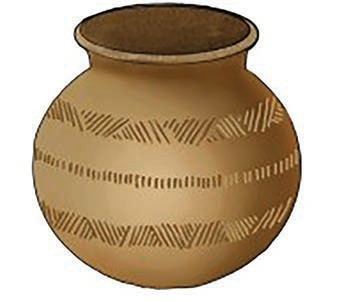

Kielelezo namba 5: Chungu kilichotiwa nakshi ya mikwaruzo
(b) Nakshi ya michoro
Kuweka nakshi ya michoro kwenye chungu tumia brashi au kijiti kuchora mistari, maua, maumbo ya kijiometri, au mandhari yoyote unayopendelea. Tumia rangi zinazofaa kwa udongo au kutumia udongo mwingine wenye rangi tofauti kama nyenzo ya kuchora. Udongo wa chungu unapaswa kuwa na unyevunyevu kidogo ili iwe rahisi kuchora. Kielelezo namba 6 kinaonesha chungu kilichotiwa nakshi ya michoro kwa rangi.
Kielelezo namba 6: Chungu kilichotiwa nakshi ya michoro kwa rangi